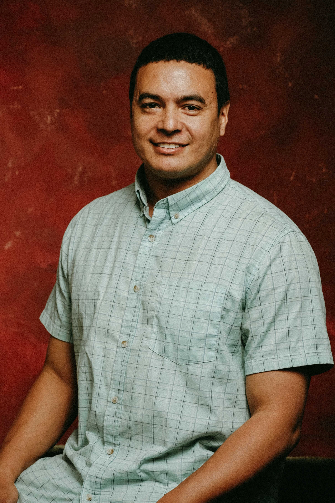

Beyond the Code

I am a senior engineer who thrives at the intersection of spatial data, robust backends, and responsive frontend architectures.What I Do
When I’m not writing automation workflows, tweaking GIS pipelines, or building machine learning infrastructures, you can usually find me working on automotive DIY projects or tending to my vegetable garden.
🌍 Roots & Global Communication
Originally from Colombia, my life has been shaped by a unique blend of Afro-Caribbean vibrancy, Arabic heritage, and Hispanic/Indigenous roots. Growing up across diverse landscapes—from the high-altitude energy of Bogotá to the serene rhythm of the Caribbean coast—gave me an innate ability to connect with people from all walks of life.
Living alongside Jamaican and San Andrés communities honed my cross-cultural communication skills and established my English fluency early on.
⚓ Discipline & Continuous Growth
My drive to serve led me into the military, where through focus and grit, I earned my commission as an Officer in the Reserve Corps. That phase of my life instilled deep structural discipline, a trait that directly translates to how I organize complex software architectures today.
My passion for learning has never stopped:
- Linguistics: I learned to read and write Arabic script (Fusha) and have a foundational grasp of the Cyrillic alphabet.
- Tactical Training: Completed formal seaman training and hold a certificate in Krav Maga.
🇨🇦 Current Chapter
Today, I live and work in Canada, building a fulfilling family life, contributing to the local tech community, and engineering smart, spatial software solutions for the future.